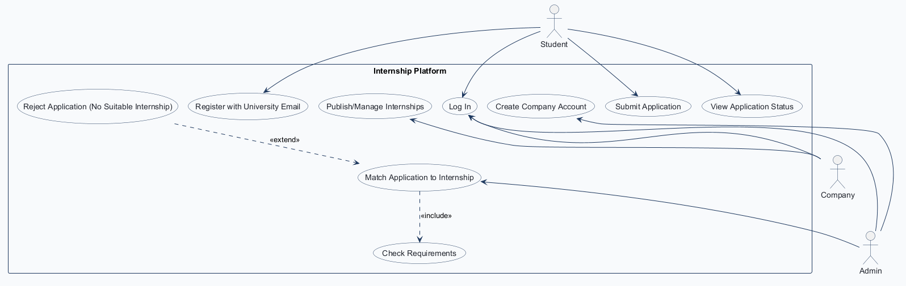
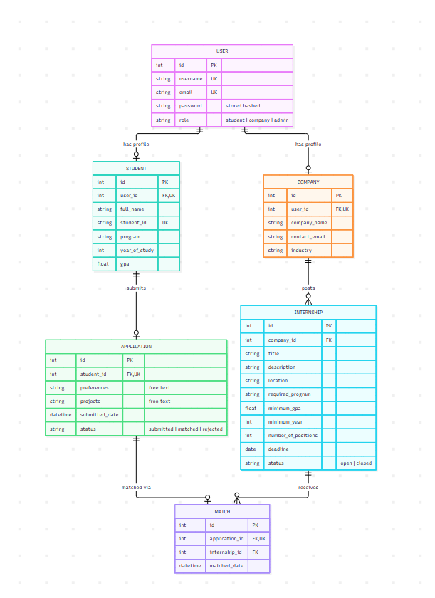
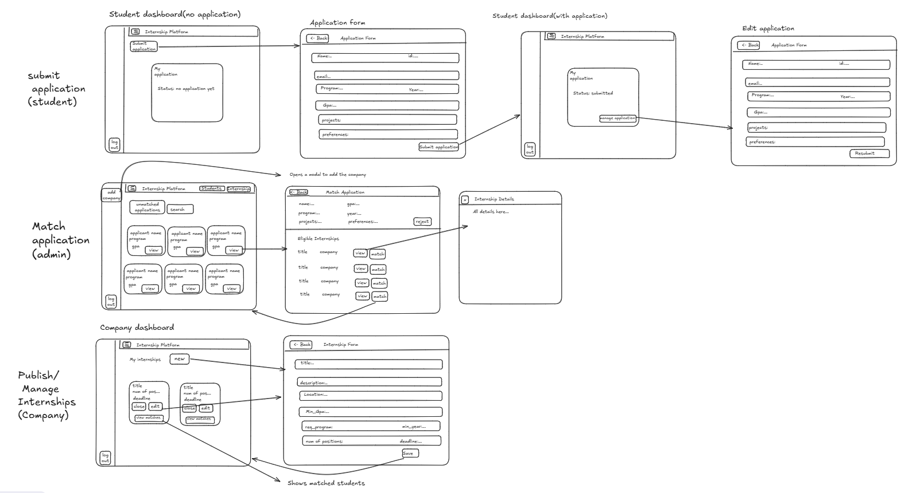

Name: your name ID: your ID Repository: https://github.com/Gianmarcos794/Comp3613_A1
Internship Platform (InternSearch) is a departmental system that takes student applications and matches them to internship positions offered by participating companies.
InternSearch treats internships as a matching service run by the department, not a job board.
.edu university email, GPA is capped at 4.3, an internship closes when its positions are filled, and an internship with matches can only be closed, never deleted.Workflows:



Based on the wireframe screens above. The tester ticks each step and criterion as they go, then marks Pass or Fail.
InternSearch User Acceptance Test Report
| Tester Name | Tester Position | Date of Test (DD/MM/YYYY) |
|---|---|---|
| Test Case | Pre-conditions | Test Steps | Test Criteria | Success |
|---|---|---|---|---|
| 1.1 Register (Student) | None | On the landing page, click "Create an account" Enter a username, a university email ending in .edu, and a passwordPress "Create account" |
User is directed to the Sign in page User is alerted "Registration completed! Sign in now!" Registering with a non- .edu email shows an error asking for a university email |
Pass Fail |
| 1.2 Log In | Has an account (student, company or admin) | On the login page, fill in username and password Press "Sign in" |
Student / company is directed to their Dashboard; admin to the Admin dashboard "Welcome, username" is shown in the header "Logout" is shown in the side menu A wrong password shows "Incorrect username or password" |
Pass Fail |
| 1.3 Log Out | Logged in | Press "Logout" in the side menu | User is returned to the public site Opening the dashboard URL again does not show the dashboard |
Pass Fail |
| Test Case | Pre-conditions | Test Steps | Test Criteria | Success |
|---|---|---|---|---|
| 2.1 Submit Application | Logged in as a student Has not applied yet |
On the Dashboard, the "My application" card shows no application yet Click "Submit application" Fill in Name, ID, Program, Year, GPA, Projects and Preferences Press "Submit application" |
Email is filled in automatically and cannot be changed User is returned to the Dashboard User is alerted "Application submitted." "My application" shows Status: Submitted and the submitted date |
Pass Fail |
| 2.2 Edit and Resubmit Application | Logged in as a student Application is Submitted (not matched) |
On the Dashboard, click "Manage application" Change the Preferences Press "Resubmit" |
The Edit application form opens with the current details filled in User is returned to the Dashboard with "Application submitted." The submitted date is updated |
Pass Fail |
| 2.3 View Rejected Status and Resubmit | Logged in as a student Admin has rejected the application (4.4) |
Open the Dashboard Click "Manage application", update details, press "Resubmit" |
Dashboard says no suitable internship was found and the student can resubmit After resubmitting, status is back to Submitted |
Pass Fail |
| 2.4 View Matched Status | Logged in as a student Admin has matched the application (4.3) |
Open the Dashboard | Dashboard says the student has been matched and the application is final The internship title, company and location are shown "Manage application" is no longer available |
Pass Fail |
| Test Case | Pre-conditions | Test Steps | Test Criteria | Success |
|---|---|---|---|---|
| 3.1 Publish Internship | Company account created by the admin (4.1) Logged in as that company |
On the Dashboard under "My internships", click "New" Fill in Title, Description, Location, Minimum GPA, Required program, Minimum year, Number of positions and a future Deadline Press "Save" |
User is returned to the Dashboard User is alerted "Created title." A new card shows the title, positions and deadline A past deadline or GPA above 4.3 is refused with a message |
Pass Fail |
| 3.2 Edit Internship | Logged in as a company Has an open internship |
On the internship card, click "Edit" Change the title or number of positions Press "Save" |
The form opens with the current values filled in User is alerted "Saved title." The card shows the new values |
Pass Fail |
| 3.3 Close Internship | Logged in as a company Has an open internship |
On the internship card, click "Close" | User is alerted "Closed title. It will get no new matches." The card shows the internship as closed The internship can no longer be edited |
Pass Fail |
| 3.4 View Matched Students | Logged in as a company At least one student is matched to its internship (4.3) |
On the internship card, click "View matches" | "Matched students" page lists each student's Name, Student ID, Program, Year, GPA and Email Shows "n / total positions filled" "← Back" returns to the Dashboard |
Pass Fail |
| Test Case | Pre-conditions | Test Steps | Test Criteria | Success |
|---|---|---|---|---|
| 4.1 Create Company Account | Logged in as an admin | Click "Add company" in the side menu Fill in Username, Login email, Password, Company name, Contact email and Industry Press "Create account" |
User is alerted "Company account created for company name." The company can log in with those details (1.2) A username that is already taken is refused |
Pass Fail |
| 4.2 Find an Application | Logged in as an admin At least one student has applied (2.1) |
On the Admin dashboard, click "Students" Keep "Unmatched applications" selected Type a name, student ID or program in the search box and press "Search" |
Only unmatched (submitted) applications are listed Each card shows the name, program and GPA The search narrows the list to matching students |
Pass Fail |
| 4.3 Match Application | Logged in as an admin An unmatched application exists An open internship the student qualifies for exists (3.1) |
On a student's card, click "View" Under "Eligible internships", click an internship to see its details Press "Match" |
The Match application page shows the student's details and only internships the student meets the requirements for User is returned to the Admin dashboard and alerted "Application matched successfully." The application no longer appears under "Unmatched applications" When the last position is filled, the internship shows as closed under "Internships" |
Pass Fail |
| 4.4 Reject Application | Logged in as an admin An unmatched application exists |
On a student's card, click "View" Press "Reject" |
User is returned to the Admin dashboard User is alerted "Rejected name's application. They can update it and resubmit." The application no longer appears under "Unmatched applications" |
Pass Fail |
| General Comments | Accepted | Rejected | Signature |
|---|---|---|
Each service is tested in isolation: its repositories are replaced with in-memory fakes, so no database, HTTP request or login is involved. The plan covers the success path of each workflow's main action and its most important business rules.
InternshipService (Publish/Manage Internships)
| ID | Function | Input / setup | Expected result |
|---|---|---|---|
| UT-01 | create_internship |
Company user, valid form, deadline in 30 days | Internship saved with the company's company_id and status open |
| UT-02 | create_internship |
Deadline yesterday | InternshipError: "The deadline can't be in the past." |
| UT-03 | get_owned |
Internship belongs to another company | InternshipError: "Internship not found." |
| UT-04 | update_internship |
Internship is closed |
InternshipError: "This internship is closed and can no longer be edited." |
| UT-05 | update_internship |
2 students matched, positions changed to 1 | InternshipError: "...positions can't go below 2." |
| UT-06 | update_internship |
2 students matched, positions changed from 3 to 2 | Internship status becomes closed (all positions filled) |
| UT-07 | close_internship |
Internship already closed |
InternshipError: "This internship is already closed." |
ApplicationService (Submit Application)
| ID | Function | Input / setup | Expected result |
|---|---|---|---|
| UT-08 | submit_application |
Student's first submit, valid form | Student profile created; application saved with status submitted |
| UT-09 | submit_application |
Existing application is matched |
ApplicationError: "...has been matched and can no longer be changed." |
| UT-10 | submit_application |
GPA = 4.5 | ApplicationError: "GPA must be between 0 and 4.3." |
MatchService (Match Application to Internship)
| ID | Function | Input / setup | Expected result |
|---|---|---|---|
| UT-11 | match_application |
Submitted application, eligible internship with free positions | Match created; application status matched |
| UT-12 | match_application |
Internship has 1 position left | Match created; internship status becomes closed |
| UT-13 | match_application |
Internship not in the student's eligible list | MatchError: "That internship isn't eligible for this student any more." |
| UT-14 | reject_application |
Submitted application | Application status becomes rejected |
AuthService & CompanyService (Register / Create Company Account)
| ID | Function | Input / setup | Expected result |
|---|---|---|---|
| UT-15 | AuthService.register_user |
Email bob@gmail.com |
RegistrationError: "Please sign up with your university email..." |
| UT-16 | CompanyService.create_company_account |
Username already taken | CompanyError: "That username is already taken." |
Integration tests send real HTTP requests to the JSON API with FastAPI's TestClient. Each request runs through the route → service → repository → database chain against a fresh in-memory SQLite database, which replaces the app's session dependency. Each test checks the HTTP response and the resulting database state.
Authentication & Authorization
| ID | Endpoint | Role | Setup / input | Expected response | Expected DB change |
|---|---|---|---|---|---|
| IT-01 | POST /api/register |
none | Username, .edu email, password |
201, role = student |
New user with role student |
| IT-02 | POST /api/login |
none | Wrong password | 401, "Incorrect username or password" |
None |
| IT-03 | GET /api/internships |
none | No token | 401 JSON |
None |
| IT-04 | POST /api/internships |
Student | Valid internship body | 401, "Only companies can access this page" |
No internship created |
Publish/Manage Internships (Company)
| ID | Endpoint | Role | Setup / input | Expected response | Expected DB change |
|---|---|---|---|---|---|
| IT-05 | POST /api/internships |
Company | Valid body, deadline in 30 days | 201, status = open |
Internship saved with the company's company_id |
| IT-06 | POST /api/internships |
Company | Deadline yesterday | 400, "The deadline can't be in the past." |
No internship created |
| IT-07 | GET /api/internships/{id} |
Company | Internship belongs to another company | 404, "Internship not found." |
None |
| IT-08 | PATCH /api/internships/{id} |
Company | {"status": "closed"} |
200, status = closed |
Status closed |
Submit Application (Student)
| ID | Endpoint | Role | Setup / input | Expected response | Expected DB change |
|---|---|---|---|---|---|
| IT-09 | PUT /api/application |
Student | Valid application body | 200, status = submitted |
Student profile and application created |
Match Application to Internship (Admin)
| ID | Endpoint | Role | Setup / input | Expected response | Expected DB change |
|---|---|---|---|---|---|
| IT-10 | POST /api/companies |
Admin | Valid company account body | 201, company returned |
User (role company) and company profile created |
| IT-11 | POST /api/matches |
Admin | Submitted application, eligible internship with 1 position | 201, internship status = closed |
Match created; application matched; internship closed |
End-to-end workflow
| ID | Endpoint | Role | Setup / input | Expected response | Expected DB change |
|---|---|---|---|---|---|
| IT-12 | Full flow across all endpoints | Admin → Company → Student → Admin | Admin creates a company; company publishes an internship; student registers and applies; admin matches them | Student's GET /api/application shows status matched with the internship and company; company's GET /api/internships/{id}/matches lists the student |
Matching user, company, internship, student, application and match rows all linked |
tests/unit/tests/integration/postman/ (Postman collection exported to JSON)Run with:
pytest tests/unit -v
pytest tests/integration -v
Screenshot of pytest tests/unit -v.
Screenshot of pytest tests/integration -v.
Screenshot of the Postman Collection Runner results.